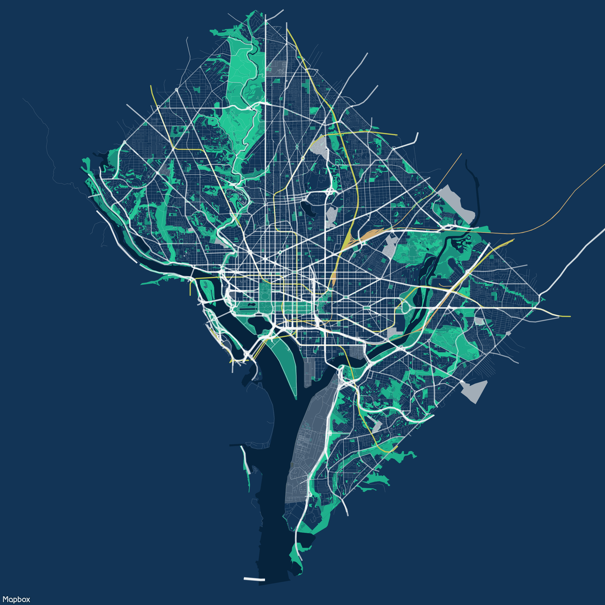
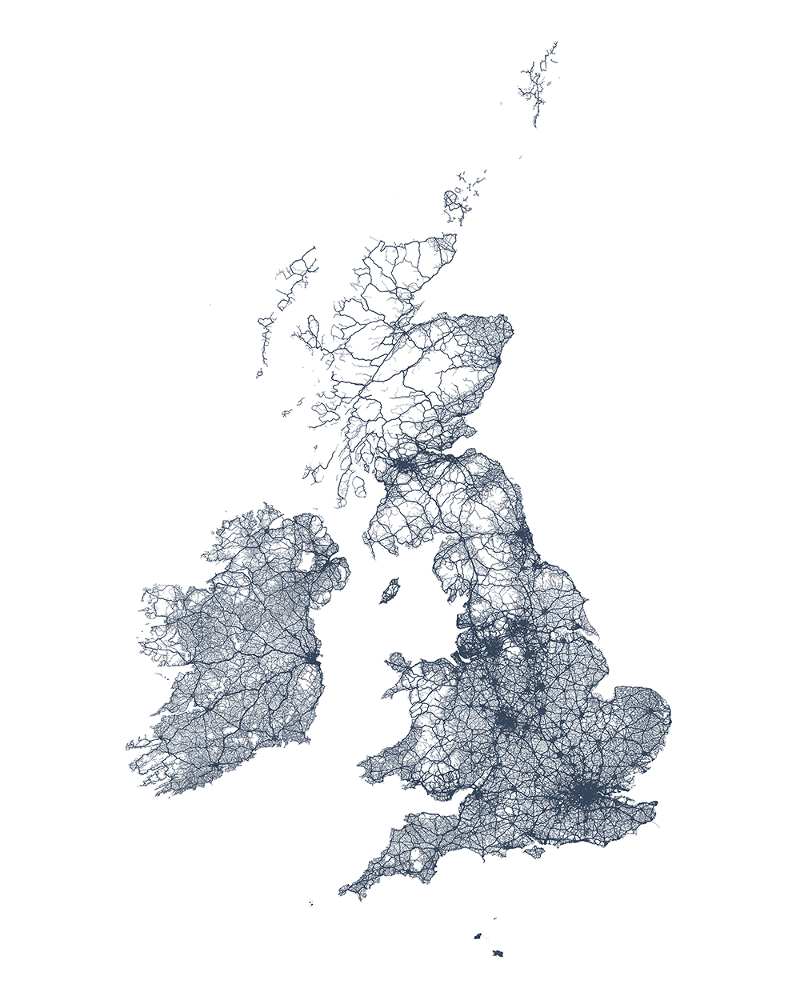
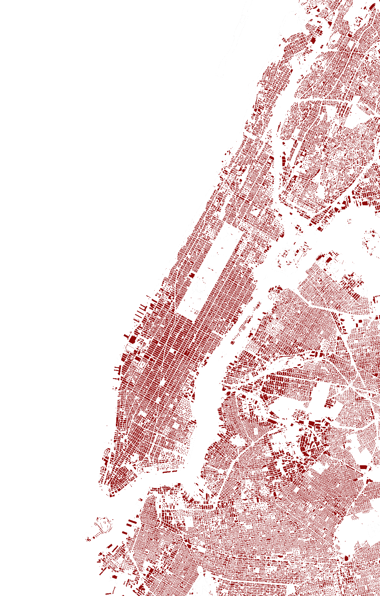
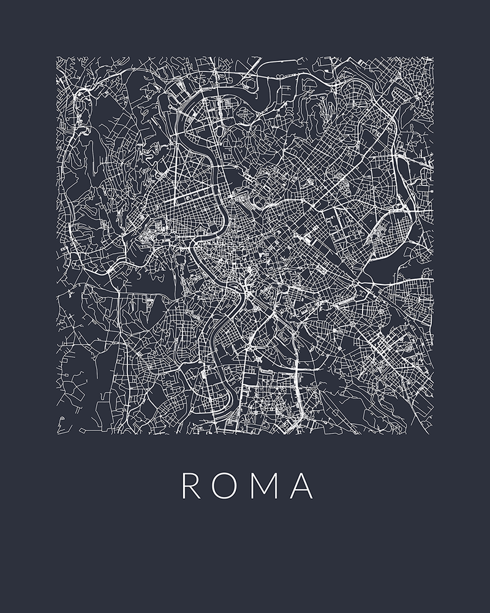
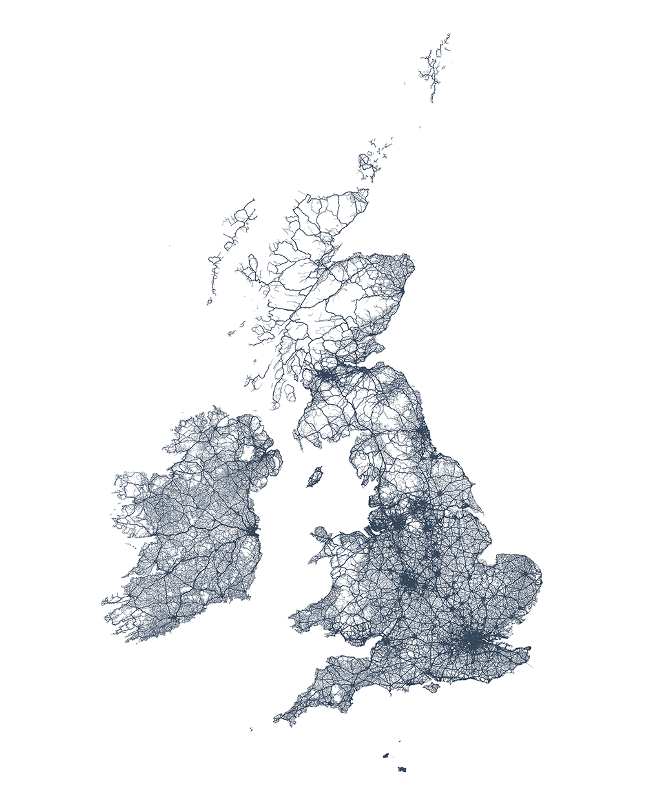
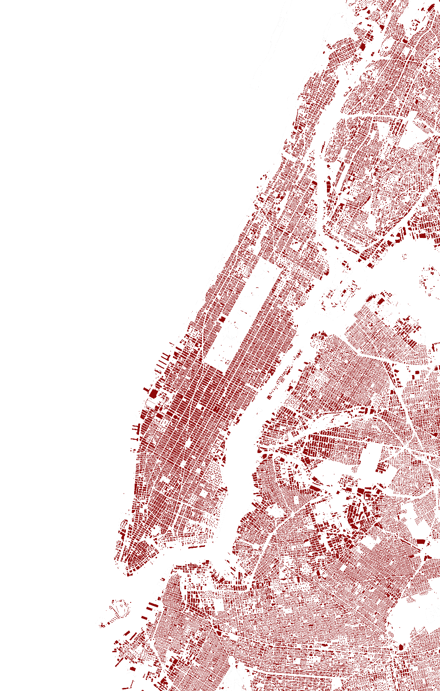
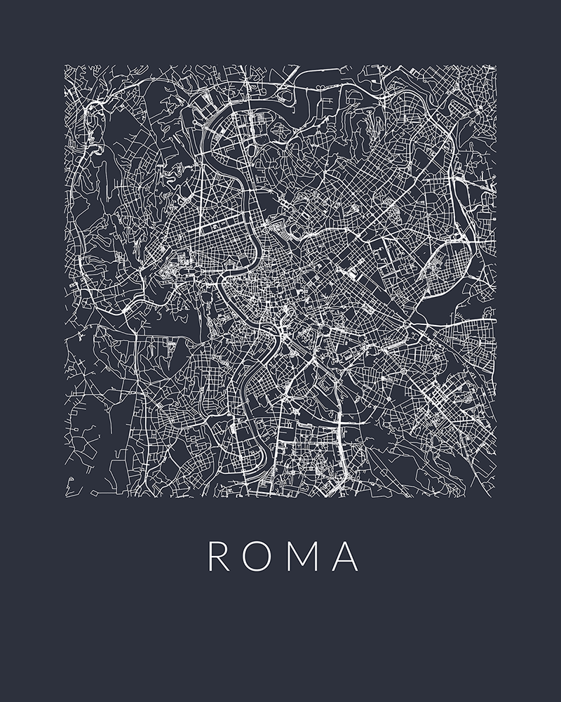

>> Thomas J. Fox | Cartography
DC Map
For this project, I wanted to tackle something concreted over a limited area. Washington, D.C. quickly appeared as the logical choice to use. They have an incredible wealth of open data available for public usage and quick download.
Displayed in the map are natural areas, water, land usage (some), roads, rails, paths, buildings and street trees.
Data from OpenStreetMap and DC Open Data. Created using QGIS and Mapbox Studios.
Minimalist Maps
After being introduced to the facinating world of Geographic Information Systems as a web development intern at NBT Solutions, a custom GIS web development outfit, I decided to test the limits of maps. I wanted to explore how to meaningfully display only a small subset of potential data on a map, in a minimalist and beautiful way. In the process I created dozens of different posters featuring displays of road networks in well-known cities.
To create these maps, I used data from the awesome contributers over at OpenStreetMap and the TileMill project created by the folks at Mapbox. Some additional post processing to the generated svg files was completed in Adobe Illustrator.

 




